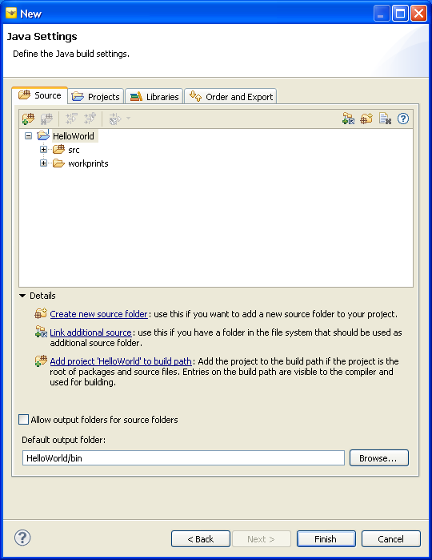

Creating a Magic Lantern Project
This document discusses how to create a project in Magic Lantern Java2D
Studio. A project is created using the New Magic Lantern Java2D Project
wizard. The wizard is used to create a project in the Eclipse workspace, specifying
the Java Runtime Environment (JRE) that the title will be targeted for. The
wizard also helps the developer identify the Digital Workprint and Digital
Playprint configuration for the Magic Lantern title. To simplify title development,
the developer can use the wizard to select a title template to base his/her
application on. Finally, the new project wizard is used to specify the source
and destination locations for the application code and executable classes,
respectively. Library and project dependencies are also specified through
the new project wizard.
To create a Magic Lantern Project, do the following:
-
Select "File->New->Project..."
from the main Eclipse menu toolbar. This will bring up a New wizard selection
dialog box (see Figure 2.1).
Figure 2.1: New Wizard Selection Dialog
- Select the "Magic Lantern" category
to list the Magic Lantern wizard selections.

Note: An alternative way to select
the New Magic Lantern Java2D Project wizard is to use the shortcut in
the Magic Lantern Studio Perspective. Figure 2.2 shows how to use this
shortcut.
Figure 2.2: Using Perspective Shortcut to Create a New Project
- Double-click on "Magic Lantern Java2D Project"
to select the New Magic Lantern Java2D Project wizard. Figure 2.3
shows the new wizard.
Figure 2.3: New Magic Lantern Project Wizard
- Type in the name of the project. For example, Figure 2.3 shows HelloWorld
being used. For this example, leave the rest of the configuration parameters
in thier default state. We will be targeting version 1.6 of the JRE.
- Select the "Next >" buton to continue.
The wizard proceeds to the next page, displaying the user interface for identifying
the name of the Magic Lantern Digital Workprint. If you wish to change the
name of the Digital Workprint, do so now. See Figure 2.4.
Figure 2.4: Magic Lantern Java2D Configuration Page - Digital Workprint
Note: The Rehearsal Player is not currently
available with this release of Magic Lantern. Selecting the "Add
Rehearsal Player" button will do nothing.
- Select the "Digital Playprint" tab.
Figure 2.5 shows the configuration options for mastering the title. In this
example, we will use the default mastering configuration.
Figure 2.5: Magic Lantern Java2D Configuration Page - Digital Playprint
- Select the "Templates" tab in the Java2D
Configuration Page. Notice that Simple template is already selected.
The Simple template is the simplest title that can be mastered for the Java2D
target. The title consists of a Stage with a single Set.
The Stage is implemented as a Java AWT Frame. The Simple title does not contain
any Actors. Executing the Simple title will display an empty window
(Java Frame).
Select the the HelloWorld template (See Figure 2.6).
The HelloWorld template generates a title capable of rendering a string, "Hello
World!". The HelloWorld title consists of a Stage, a Set, and a LabelWidget
Actor. The HelloWorld title also provides a LabelWidget Role for rendering
the text onto its Set.
Figure 2.6: Magic Lantern Java2D Configuration Page - Templates
- Select the "Next>" button to continue.
This will bring you to the final wizard page where you can configure the Java
build settings.

Figure 2.7: Java Settings Page
- To complete setting up your Magic Lantern Studio project, select "Finish".
This will create the project and master the template for the Java2D target.
The wizard will ask you if you wish to change perspectives from the Magic
Lantern Studio Perspective to the Java Perspective. Select "Yes"
to switch perspectives.
- The HelloWorld project should now appear in the Package Explorer on the
left-hand side of the Java perspective. If you expand the project hierarchy,
you should see something like Figure 2.8.
Figure 2.8: HelloWorld Project
Title Structure
The src directory in Figure 2.8 contains the source that was
generated by the application template. The main title source is found in the
helloworld.title, helloworld.actors, and helloworld.roles
packages. The gen directory, located under src, is where the
mastered elements exist. The mastered elements were generated from the Digital
Workprint located in the workprints directory. The Digital
Workprint for this example is called HelloWorld.dwp.
For more information concerning the title components, please read the section
on "Title Structure".
Executing the Title
To execute the title, you will need to create a launch configuration. You will
also need to pass the Digital Playprint, HelloWorld.dpp, as
a command-line argument to the application's main entry point (main()
method in helloworld.title.HelloWorld class).
If you are anxious to see this title run, then please proceed to "Executing
the Title".